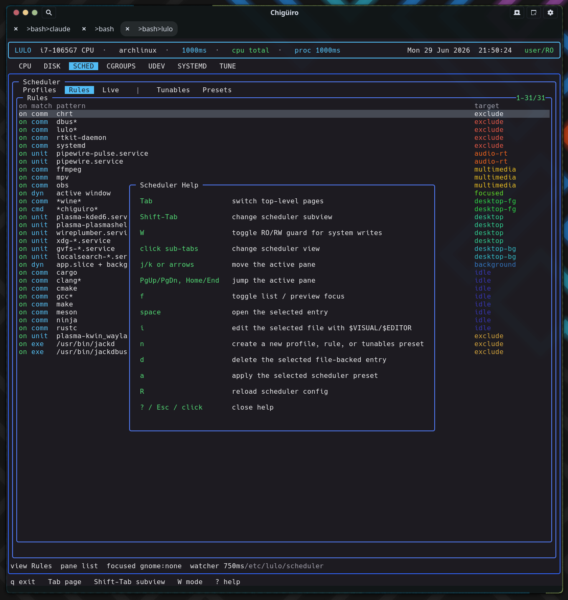

This page is the system map for Lulo: the three processes, the privilege boundary between them, where each subsystem lives, and how a request travels from the TUI down to a privileged write.
Lulo is a terminal-based Linux management and observability tool. It renders a Notcurses TUI over a split daemon backend so that live inspection (CPU, processes, disk) and privileged policy work (scheduler enforcement, system-file edits) can share one cohesive interface without the frontend ever running as root.
The project is intentionally a three-process design rather than one monolithic privileged binary. The frontend draws and handles input, a session daemon caches state and integrates with the desktop, and a privileged daemon is the only component that writes system files or enforces scheduler policy. Everything below follows from that split.
Lulo runs as three cooperating processes, each with a tightly scoped responsibility. The frontend is the only one a user interacts with directly; the two daemons sit behind sockets.
| Process | Scope | Responsibilities |
|---|---|---|
lulo |
UI | Notcurses rendering, input handling, editor handoff, page orchestration |
lulod |
User / session | Session-facing cache and state, focus integration, frontend IPC, page snapshots |
lulod-system |
Privileged / system | Scheduler enforcement, privileged edit / apply operations, long-lived system policy |
| Helper | Purpose |
|---|---|
lulo-admin |
Narrow privileged helper used by the current polkit / pkexec path |
lulod-focus-kde |
KDE / Qt focus helper that reports the currently focused window PID |
lulod-focus-gnome |
GNOME focus helper; relays the PID published by the lulod-focus@ninez.org Shell extension |
The frontend stays small and responsive because anything that blocks – scanning /proc, building a systemd inventory, reading a deep cgroup tree – happens in lulod, not in the render loop. See Process Model & IPC for the request/response detail.
The defining property of the architecture is that the TUI never writes system files and never runs as root. Privilege is concentrated in one place and reached only through a socket.
| Layer | Trust | What it may do |
|---|---|---|
lulo |
Unprivileged user | Read public state, render, request edits, hand off to $EDITOR |
lulod |
Unprivileged user | Cache snapshots, integrate focus, proxy edit/apply requests |
lulod-system |
Privileged (system service) | Apply scheduler policy, write/commit system files, mutate cgroup / sysfs / procfs |
A privileged write always crosses the boundary explicitly: the frontend stages an edit, lulod relays it, and lulod-system performs the write and commits it back. The one-shot lulo-admin helper exists for the narrow polkit / pkexec elevation path. This keeps the attack surface of the elevated component small and auditable.
user/RO mode — the unprivileged default.
There are exactly two IPC boundaries, each a Unix socket, each carrying a narrow message set.
| Boundary | Transport | Used for |
|---|---|---|
lulo <-> lulod |
Unix socket under the user runtime dir | SYSTEMD, TUNE, CGROUPS, UDEV, scheduler snapshots, focus / session-facing state |
lulod <-> lulod-system |
Unix socket under /run |
Scheduler reload / scan state, focus updates, privileged edits, file apply / delete operations |
Shared IPC code lives in one place so both ends stay in sync:
src/shared/lulod_ipc.c – frontend / session-daemon protocolsrc/shared/lulod_system_ipc.c – session-daemon / system-daemon protocol| Path | Purpose |
|---|---|
src/app |
TUI shell, input handling, page rendering, widget drawing, help overlay |
src/core |
Shared page models and user-daemon client backends |
src/daemon |
lulod, lulod-system, focus helpers, privileged edit / scheduler code |
src/shared |
IPC, proc metadata, and shared helpers |
src/admin |
Narrow admin helper entrypoint |
include |
Public / internal headers |
The build also supports running directly from the repo checkout for development, so the same layout works installed under /usr or in-tree.
Each TUI page pairs an app-layer renderer with one or more core-layer models and backends. The renderer owns drawing and interaction; the model owns data and refresh.
| Page | App module(s) | Core module(s) | Subviews |
|---|---|---|---|
| CPU / proc | main app shell | lulo_model.c, lulo_proc.c |
main CPU + proc tree |
| DISK | lulo_widgets.c |
lulo_dizk.c |
n/a |
| SCHED | lulo_sched_page.c |
lulo_sched.c, lulo_sched_backend.c |
Profiles, Rules, Live |
| CGROUPS | lulo_cgroups_page.c |
lulo_cgroups.c, lulo_cgroups_backend.c |
Tree, Files, Config |
| SYSTEMD | lulo_systemd_page.c |
lulo_systemd.c, lulo_systemd_backend.c |
Services, Deps, Config |
| UDEV | lulo_udev_page.c |
lulo_udev.c, lulo_udev_backend.c |
Rules, Hwdb, Devices |
| TUNE | lulo_tune_page.c |
lulo_tune.c, lulo_tune_backend.c |
Explore, Snapshots, Presets |
This app / core / backend triad is the repeating unit of the frontend. New pages follow the same shape: a renderer, a model, and a backend that talks to lulod.
The architecture is held together by a handful of rules. They are the reason the split is worth its overhead.
lulo.lulod.lulod-system.| Document | Covers |
|---|---|
| Process Model & IPC | The two sockets, message flow, and how a privileged edit travels end to end |
| Scheduler | Profiles, rules, policy resolution, enforcement loop, and focused-app policy |
| Focus Providers | KDE and GNOME focus detection and the provider contract |
| CPU & Process View | CPU sampling and the live process tree |
| Disk View | Filesystem usage dashboard |
| Cgroups View | Cgroup hierarchy, control files, and related config |
| Systemd View | Units, reverse dependencies, and config editing |
| Tune View | Tunables explorer, snapshots, and presets |
| Udev View | Rules, hwdb, and live device inspection |
| Install & Packaging | Build, install, services, and packaging flow |